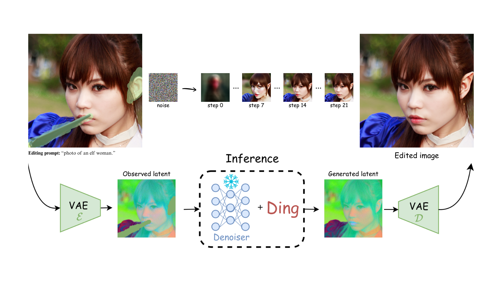
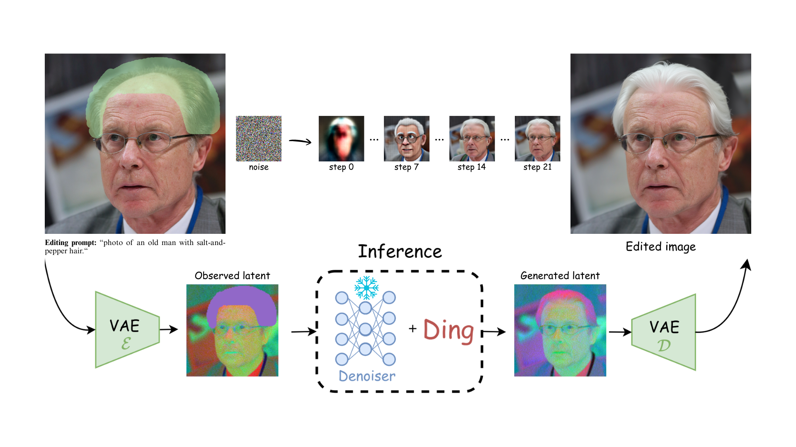
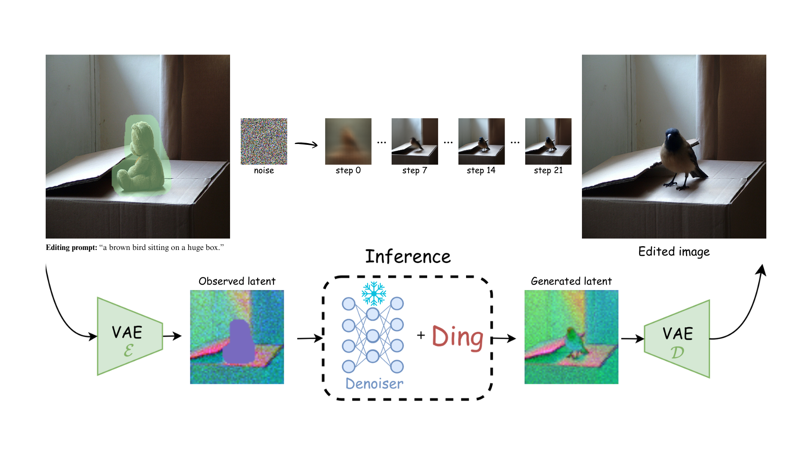
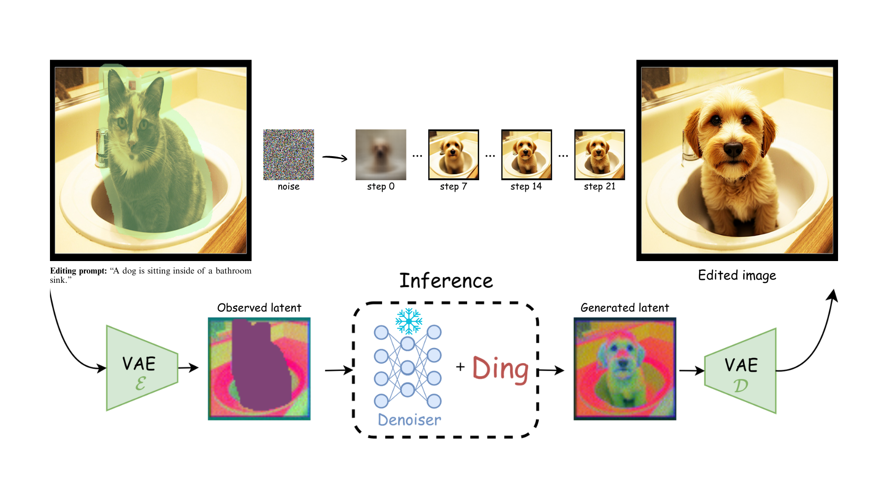
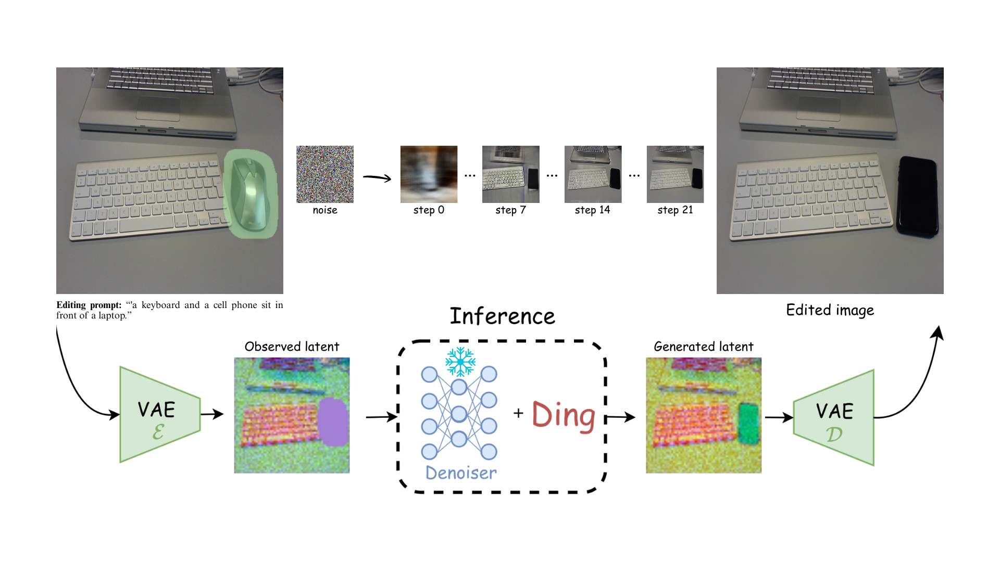
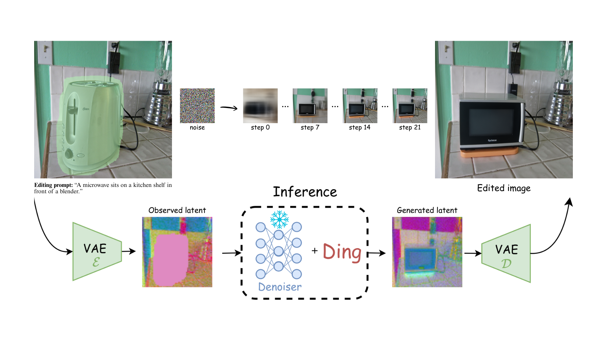
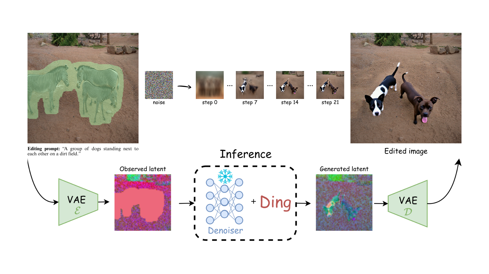
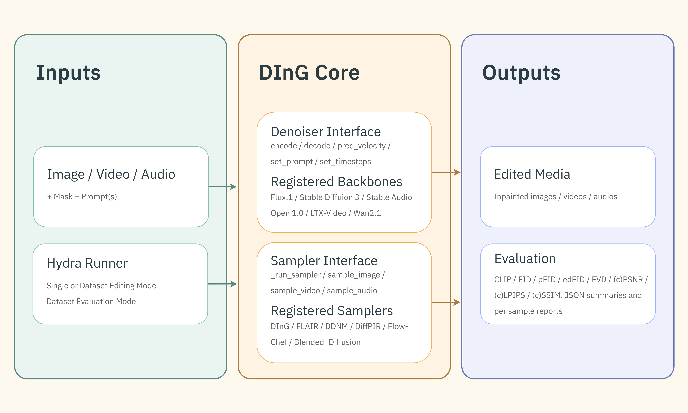
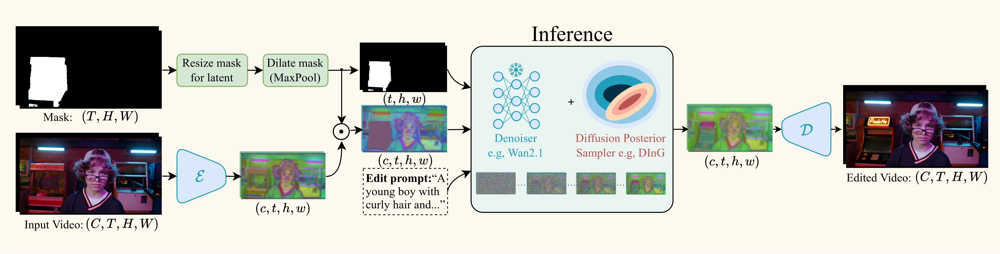

When Test-Time Guidance Is Enough:
Fast Image and Video Editing with Diffusion Guidance
DInG-Editor is a training-free toolkit for posterior-sampling inpainting and editing, unifying image, video, and audio workflows with pluggable denoisers and samplers.
Under double-blind review
Editing Examples
Each slide shows a pair: one image edit and one video edit.
Image Editing Example 1

Video Editing Example 1

Image Editing Example 2

Video Editing Example 2

Image Editing Example 3

Video Editing Example 3

Image Editing Example 4

Video Editing Example 4

Image Editing Example 5

Video Editing Example 5

Image Editing Example 6

Video Editing Example 6

Image Editing Example 7

Video Editing Example 7

Abstract
Text-driven image and video editing can be naturally cast as inpainting problems, where masked regions are reconstructed to remain consistent with both the observed content and the editing prompt. Recent advances in test-time guidance for diffusion and flow models provide a principled framework for this task; however, existing methods rely on costly vector-Jacobian product (VJP) computations to approximate the intractable guidance term, limiting their practical applicability. Building upon the recent work of Moufad et al. (2025), we provide theoretical insights into their VJP-free approximation and substantially extend their empirical evaluation to large-scale image and video editing benchmarks. Our results demonstrate that test-time guidance alone can achieve performance comparable to, and in some cases surpass, training-based methods.
Method Overview

DInG separates editing control from denoiser implementation: samplers operate over a
shared denoiser interface (pred_velocity, encode, decode) while runners handle
Hydra-based orchestration for single samples and dataset pipelines.
- Unified runners:
inpaint_img,inpaint_vid,inpaint_audio - Dataset workflows: inpaint and evaluate image/video benchmarks.
- Supported denoisers: Flux, SD3 variants, LTX, Wan, Stable Audio 1.
- Supported samplers: Ding, Flair, FlowChef, DiffPIR, DDNM, Blended Diffusion.
Data Flow (Video Editing)

Resources
I3D Checkpoint
InceptionI3D checkpoint for VFID feature extraction in video evaluation.
InpaintCOCO (512px)
Image editing benchmark dataset used for inpainting evaluation.
HumanEdit (1024px)
Image editing benchmark dataset for high-resolution edit quality assessment.
VPBench
Video editing benchmark dataset for temporal and reconstruction evaluation.
Quickstart
python -m venv .venv
source .venv/bin/activate
pip install -e .
python -m ding.runner.inpaint_img \
image_path=/path/to/input_image.png \
mask_path=/path/to/mask.png
python -m ding.runner.inpaint_vid_dataset
python -m ding.runner.evaluate_vid_datasetCitation
@article{ding-editor2026,
title={When Test-Time Guidance Is Enough: Fast Image and Video Editing with Diffusion Guidance},
author={Anonymous authors},
journal={Preprint},
year={2026}
}